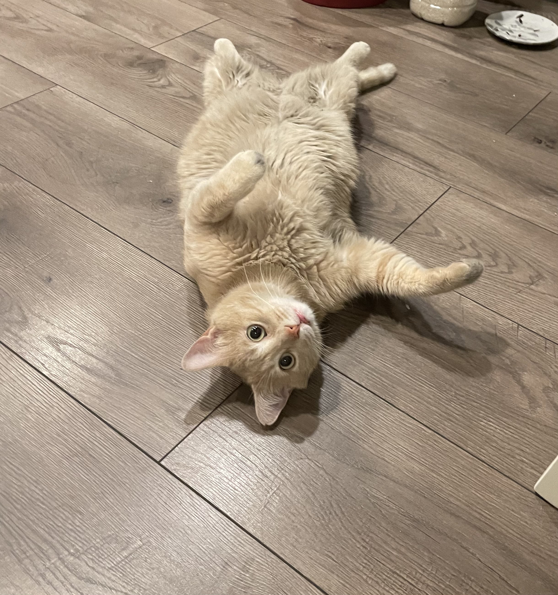

Xiao Huang The Cat
Cuddly and Loving One Moment, Then Biting and Yelling for Food the Next
Having a cat is like having a little, affectionate, furry friend. They're your roommate, until they're not.
You could find yourself being chased by your own furry companion until you forfeit your fresh
Costco
rotisserie chicken.
My cat, Xiao Huang, often likes to use this method of deception: permitting me to pet him until he starts pawing for food.
And that's just one of his many sides!
